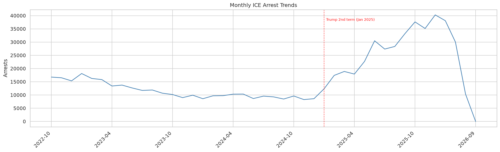
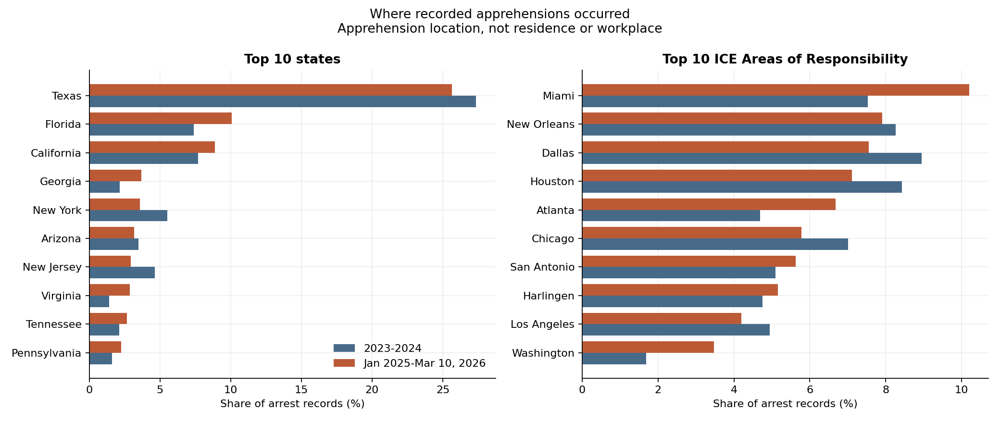
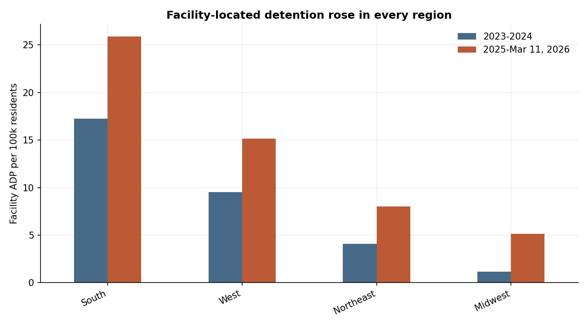
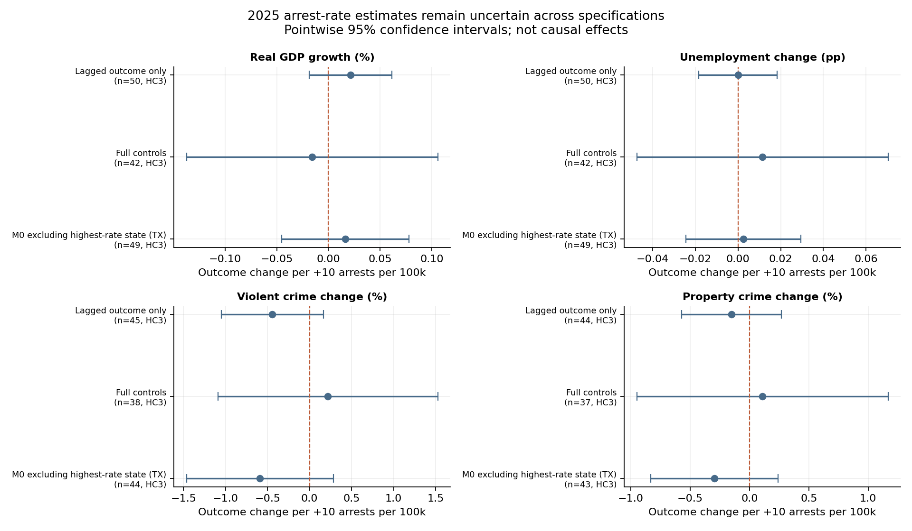

Four figures that summarize the analysis, shown full size. Source: Deportation Data Project CSV exports dated July 24, 2026.
Arrests are deduplicated records, not unique people or completed removals. Apprehension and facility locations are not where people live or work. See the case study and final report for methods and limitations.



